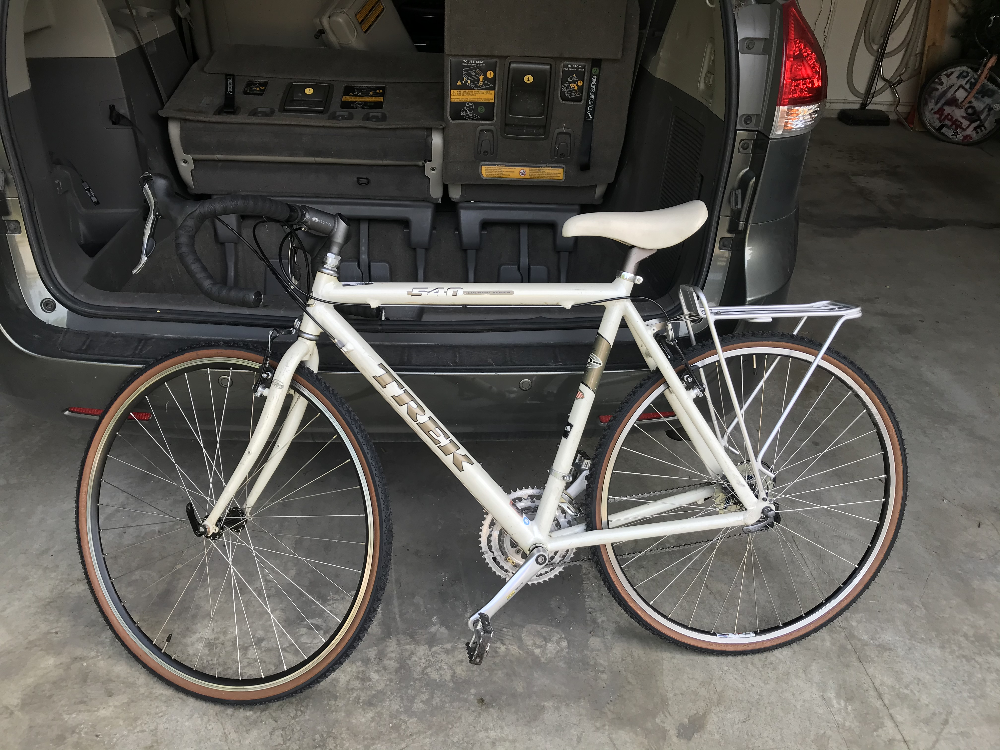

How Biking Connects Us
In a world filled with individualized transportation,
technology and fast pace lifestyles biking brings solace, meditation and community.

Biking Impact
Not only is biking healing for your own personal gain but, its positive imapct on the environment is equally rewarding.
At first, I thought not using a car would be very challenging but my travel time hasn't been deeply affected by the switch.
However, I live in a really central location in the city. Another positive impact that biking provides is saving money!
By biking everywhere you are not supporting the oil industry, and not having to invest in car insurance, or the maintenance upkeep.
Biking from place to place everyday also gives a sense of belonging as you often see the same people biking the same routes, our you see people in the neighborhood more.
Mastering A Skill and Pushing Your Body
The mechanics of bikes is quite complex. There are so many different compenants and while there are the basic compenants that are in every bike there are specific kinds of bikes that call for more parts.
Exploring how to repair and care for your own bike is affordable, challenging and a skill that can turn into a fun hobby. Lots of people can ride a bike but not everyone can also repair their own bike.
Before biking everywhere it was difficult to make myself workout.
However, by using bike as my vechile to commute it incorporated exercise into my daily routine.
Biking as added so much knowledge, community, wealth and joy to my life.